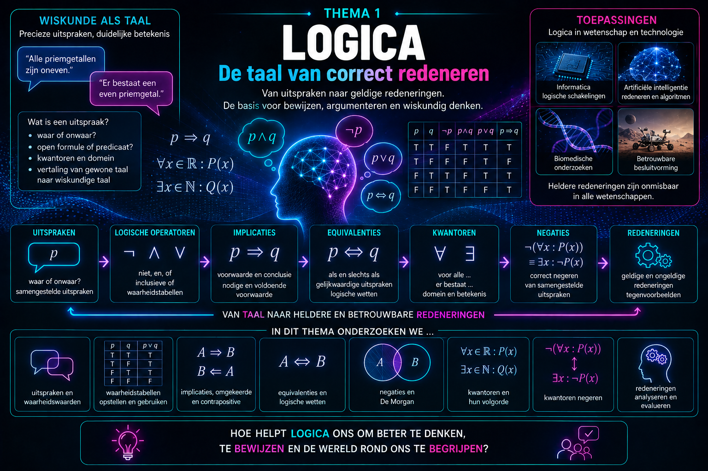

Overzicht van de hoofdstukken
Waarom logica?
In de wiskunde is een juist antwoord niet voldoende. We willen ook weten waarom een uitspraak waar is en of de redenering die ernaartoe leidt werkelijk geldig is.
Dat vraagt om een precieze taal. Woorden zoals en, of, als …dan, voor alle en er bestaat hebben in de wiskunde een heel specifieke betekenis. Een kleine verandering in zo’n formulering kan de betekenis van een uitspraak volledig veranderen.
In dit thema bouwen we daarom de taal van de logica op. We onderzoeken wanneer uitspraken waar of onwaar zijn en hoe samengestelde uitspraken worden gevormd. We bestuderen implicaties en equivalenties, leren werken met logische wetten en onderzoeken hoe kwantoren zoals \(\forall \) en \(\exists \) de betekenis van een uitspraak bepalen.
Maar logica gaat verder dan het correct gebruiken van symbolen. Ze geeft ons gereedschap om redeneringen kritisch te onderzoeken. Volgt een conclusie werkelijk uit de gegeven voorwaarden? Is een omgekeerde uitspraak ook waar? Hoe ontken je een wiskundige uitspraak correct? En kan één tegenvoorbeeld voldoende zijn om een algemene bewering te weerleggen?
Daarmee leggen we tegelijk een fundament voor een van de belangrijkste vaardigheden in de wiskunde: bewijzen. Doorheen de verdere cursus zullen we steeds opnieuw uitspraken formuleren, redeneringen opbouwen, argumenten beoordelen en bewijzen ontwikkelen. De logica uit dit thema vormt daarbij onze gemeenschappelijke taal.
Ook buiten de wiskunde is die manier van denken belangrijk. Logische structuren spelen een centrale rol in onder andere informatica, algoritmen, digitale schakelingen, artificiële intelligentie en wetenschappelijk onderzoek. Overal waar conclusies uit informatie worden afgeleid, is de vraag dezelfde:
Volgt wat we besluiten werkelijk uit wat we weten?
Thema1-Logica/1-Wiskundige-uitspraken Thema1-Logica/1-Wiskundige-uitspraken-oefeningen Thema1-Logica/2-Uitspraken-verbinden Thema1-Logica/2-Uitspraken-verbinden-oefeningen Thema1-Logica/3-Implicatie-equivalentie Thema1-Logica/3-Implicatie-equivalentie-oefeningen
Overzicht van de hoofdstukken